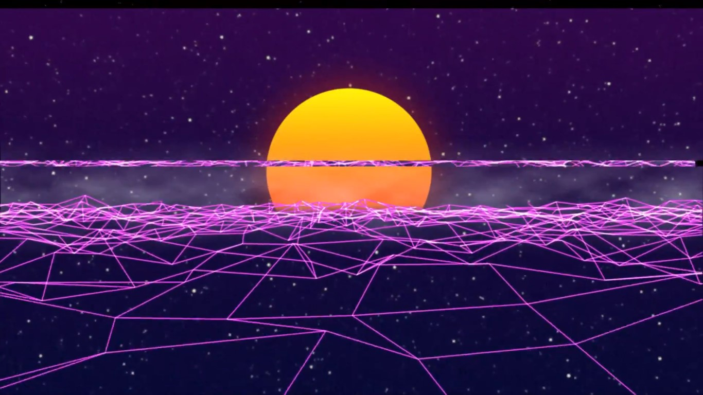
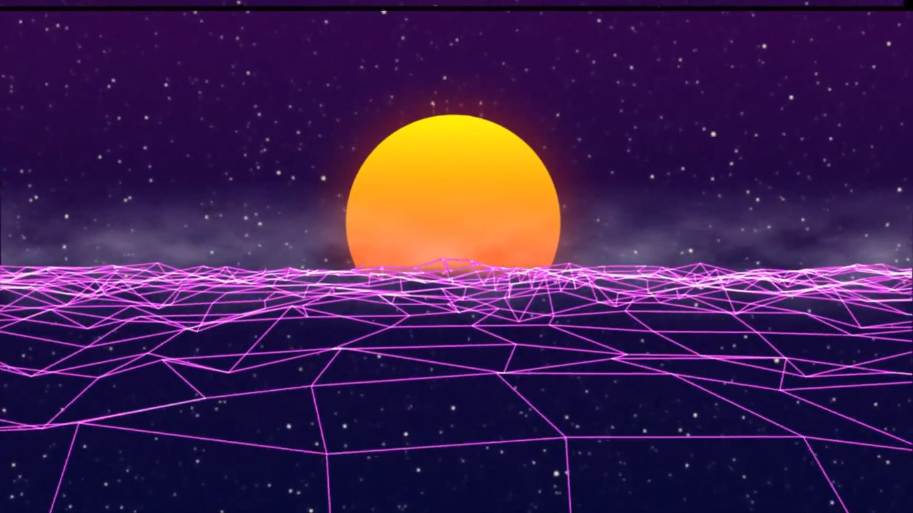
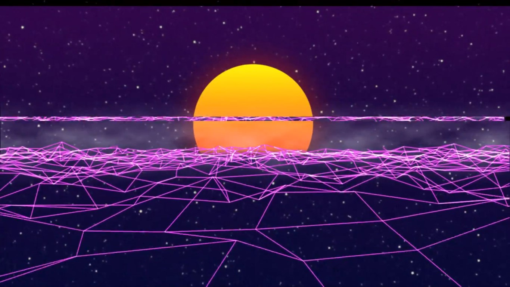
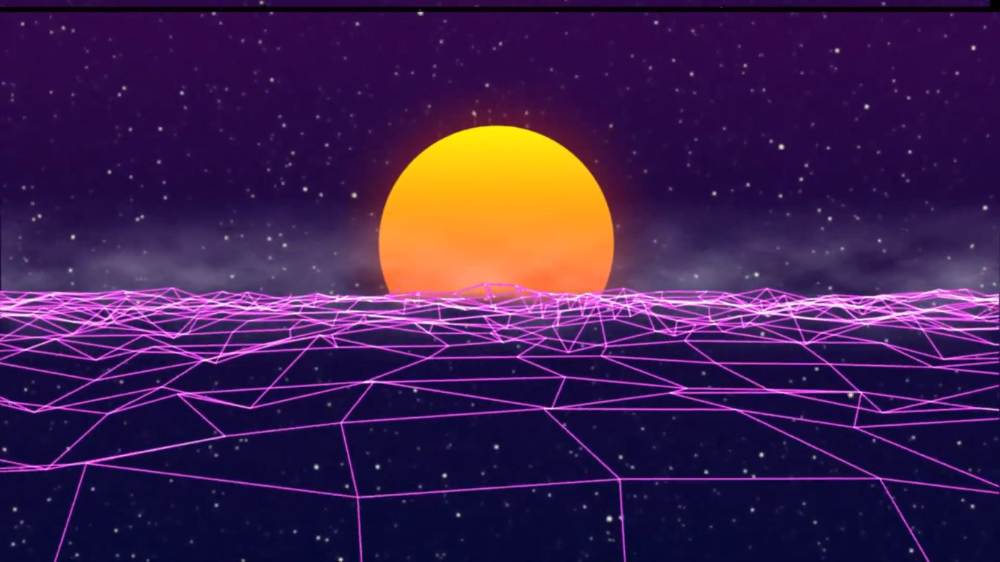
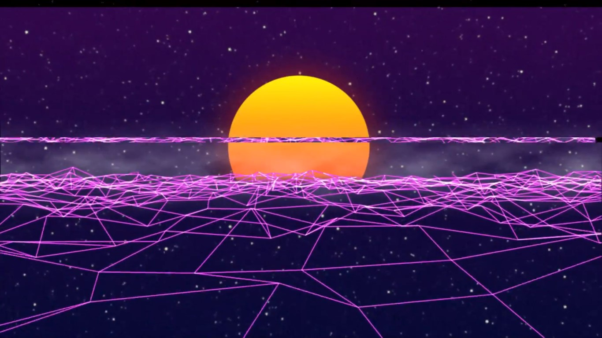
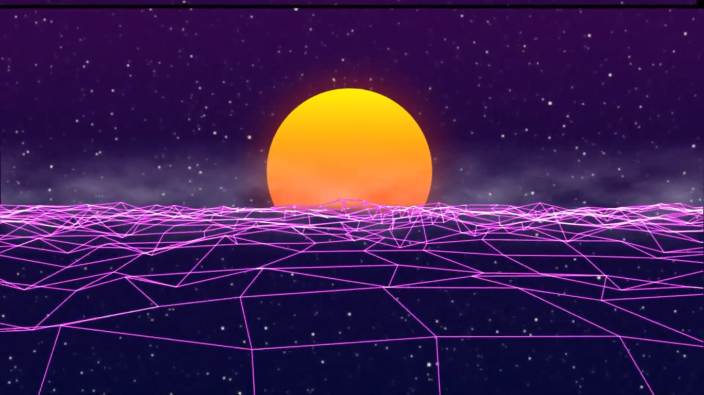

Odd Look
Le but de ce projet etait de creer une clip alternatif pour la musique "Odd Look" de Kavinsky. J'ai realisé cette video sur After Effect de A à Z.
Voir plus

Projet video de type "Vlog" retracant mon sejour à Barcelone à l'occasion du festifal OFFF 2018.
Voir plus


Le but de ce projet etait de creer une clip alternatif pour la musique "Odd Look" de Kavinsky. J'ai realisé cette video sur After Effect de A à Z.
Voir plus